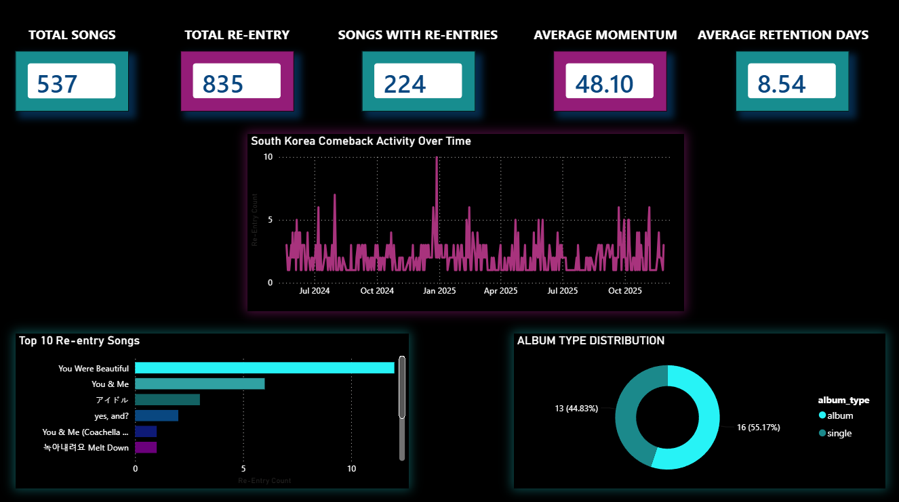
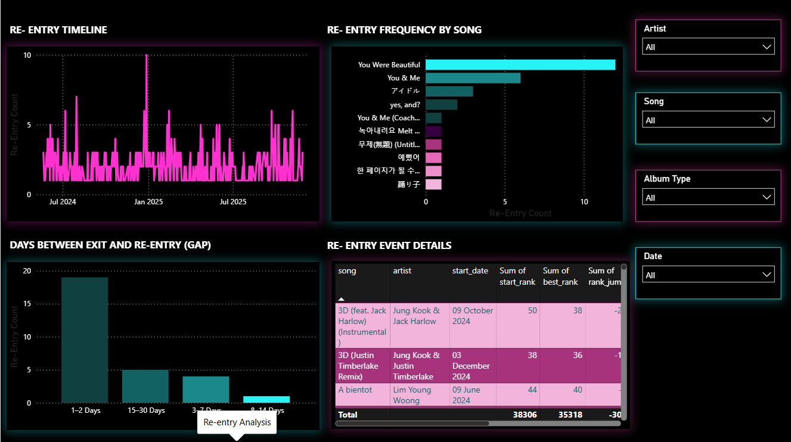
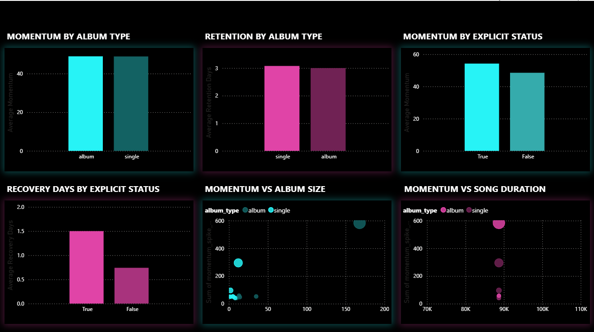
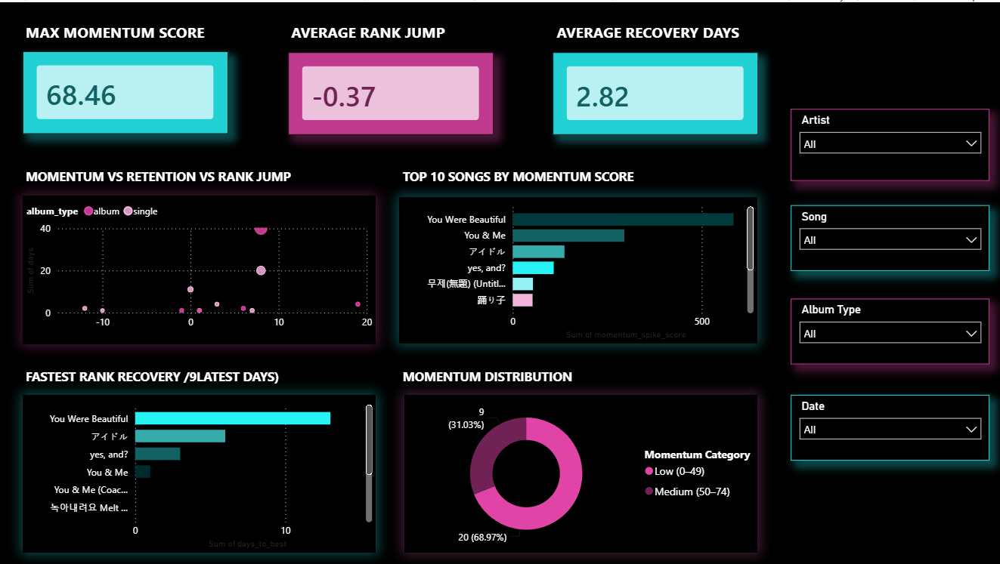
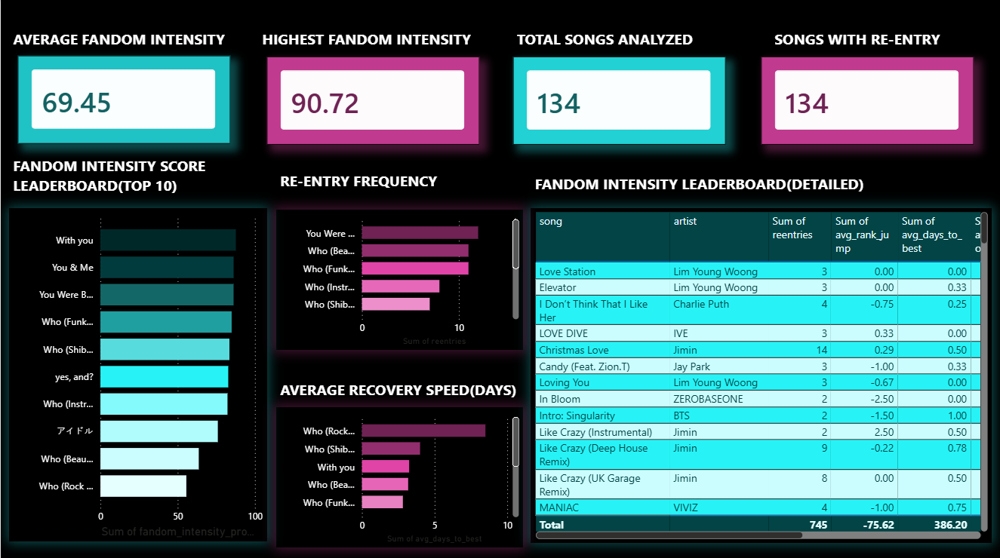

Portfolio Project · Data Analytics · Power BI → Web
Chart Re-entry.
Comeback Momentum.
Fandom Signals.
An interactive web portfolio for the South Korea Top 50 playlist project. It converts the supplied Power BI story into a responsive web experience while preserving the project's original analytical definitions: re-entry detection, Momentum Spike Score, recovery behavior, content attributes and the Fandom Intensity Proxy.
27,750 playlist observations555 observed dates835 re-entry events224 songs with re-entry134 fandom records
What this project answers
When do songs come back?Track exits, re-entries, absence gaps and comeback frequency across the Top 50.
How strong is the comeback?Combine rank jump, popularity change, recovery speed and retention into Momentum Spike Score.
Which songs show recurring chart behavior?Use a behavioral Fandom Intensity Proxy built from re-entry frequency, rank recovery, recovery speed and retention.
Portfolio preview





02 · Chart Re-entry Analysis
Re-entry is the core event
A re-entry is treated as a new chart run after at least one observed day outside the Top 50. The supplied notebook groups consecutive observed dates into runs and flags later runs as re-entries.
Re-entry Frequency by Song
Days Between Exit and Re-entry
Recent Re-entry Events
| Song | Artist | Start | Gap | Start Rank | Rank Jump |
|---|
03 · Comeback Momentum
Intensity, recovery and persistence
Top Songs by Average Momentum
Momentum vs Retention vs Rank Jump
Momentum by Explicit Status
Score definition
Momentum Spike Score = 40% normalized rank jump + 20% normalized popularity change + 20% recovery speed + 20% retention, scaled to 0–100. The rank-jump component has the largest weight, so momentum and rank recovery are closely related signals.
04 · Content Attribute Analysis
Format, explicit status, album size and duration
Momentum by Explicit Status
Song Duration vs Momentum
Interpretation
Single vs albumThe supplied EDA reports nearly identical average momentum, while album tracks show longer average retention and recovery time.
Album sizeThe reported linear correlation with momentum is approximately -0.006, effectively zero in this sample.
Song durationThe reported linear correlation with momentum is approximately 0.014, also close to zero.
05 · Fandom Intensity
Chart-behavior proxy, not fan count
The Fandom Intensity Proxy is a composite behavioral signal based on re-entry frequency, rank recovery, recovery speed and retention. It should not be presented as direct fandom size, sentiment or coordinated streaming.
Fandom Intensity Leaderboard
Detailed Leaderboard
| Song | Artist | Reentries | Avg Rank Jump | Avg Recovery | Proxy |
|---|
06 · Methodology & EDA
From raw playlist snapshots to portfolio insight
This page documents the supplied notebook methodology and the EDA report findings so the web portfolio remains auditable.
01
CleanNormalize song + artist IDs, convert duration and validate 50 records per observed date.02
Detect runsSort by song and date; a gap greater than one day starts a new chart run.03
Measure comebackCalculate re-entry gap, rank jump, popularity change, retention and days to best rank.04
Score momentumWeighted normalized composite: rank jump 40%, popularity 20%, recovery 20%, retention 20%.05
Proxy fandomCombine frequency, rank recovery, speed and retention into a behavioral intensity score.
Project facts
Dataset
27,750 cleaned playlist observations across 555 observed dates, 537 unique song-artist combinations and 194 artists.
Re-entry layer
835 comeback events across 224 songs. Median re-entry gap: 2 days. Mean gap: 6.52 days.
Fandom layer
134 songs in the supplied leaderboard, using chart behavior as a proxy rather than a direct fan measurement.
Key limitations
No direct streaming dataThe Top 50 snapshot does not directly contain streams, listeners, sales or fan counts.
Constructed indexesMomentum and fandom scores depend on normalization and weighting choices; alternative weights can change values.
Association, not causationThe current data cannot establish why a song re-entered. Campaign/event metadata would be needed for causal analysis.
Original project files